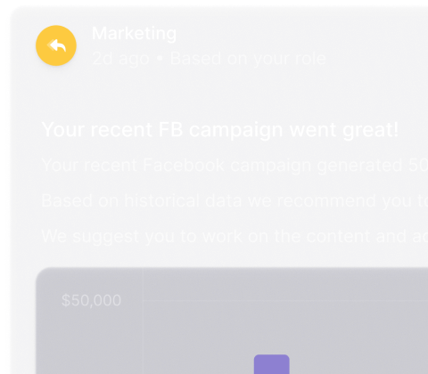
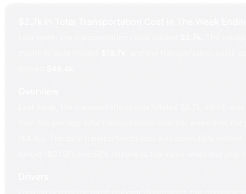

Users can intuitively pull data from multiple data sources, discover hidden trends, and share insights with your team.
With our secure and user-friendly solution, your company can easily explore a massive amount of data and get meaningful insights from that data in seconds.
Using anomaly detection, Narrative BI’s proprietary algorithms generate meaningful insights for the user without the click of a button. Narrative BI uses time-series analysis to discover key trends from historical data to predict future outcomes.
Using anomaly detection, Narrative BI’s proprietary algorithms generate meaningful insights for the user without the click of a button. Narrative BI uses time-series analysis to discover key trends from historical data to predict future outcomes.
Narrative BI’s UI has a feel to social media platforms where users can easily discover insights and share what they find with the community. Users stay informed, can share insights with the team and get their questions answered without the hassle of learning a new tool. Narrative BI has created a fun platform that people like to use.
Drag & drop insights to share with team members, other tools or emails are no longer needed to share knowledge. Marketing, leadership, sales, and other non-technical teams can now pin key insights on the company landing page, share projects, and create custom reports without going to the IT side of the business.
The Narrative BI team was founded by a diverse group of tech entrepreneurs from across the globe including California, New York, and Europe. We have founded successful startups that have been acquired by S&P 500 companies. Our team has experience deploying modern SaaS solutions on an enterprise level to the largest companies in the world. We believe in a personal touch, with flexibility to handle any use-case or challenge your business presents to us. Our goal is to win your business through an effortless approach to BI with a personal touch. At Narrative BI, we put our product, clients and culture first.
Within your data lies a story, let Narrative BI tell it.
With our secure and user-friendly solution, your company can easily explore a massive amount of data and get meaningful insights from that data in seconds.
Personalized Anomaly Detection
Narrative BI’s proprietary outlier-detection algorithm removes human bias and brings hidden insights that can be missed by traditional BI tools and data analysts.Narrative BI delivers personalized insights to the user regardless of their group, title, or challenge.
Make Quicker Decisions
Narrative BI users receive meaningful insights that lead to faster data-driven decisions.By automating insights, users are empowered to drive the business forward without asking specialists to perform ad-hoc queries which slows them down.
Data Narratives
Narrative BI uses a linear approach to package insights for its users. Similar to social media feeds, users will receive meaningful insights that can be pinned and shared with the team using simple functionality.
Eliminate Dependencies
Leadership, Marketing, Sales, Finance, and other non-technical areas of a business often struggle with the time it takes to gain insight from their data. Narrative BI’s simple interface allows non-technical users to gain insights on their own eliminating dependencies on the data team within the organization.